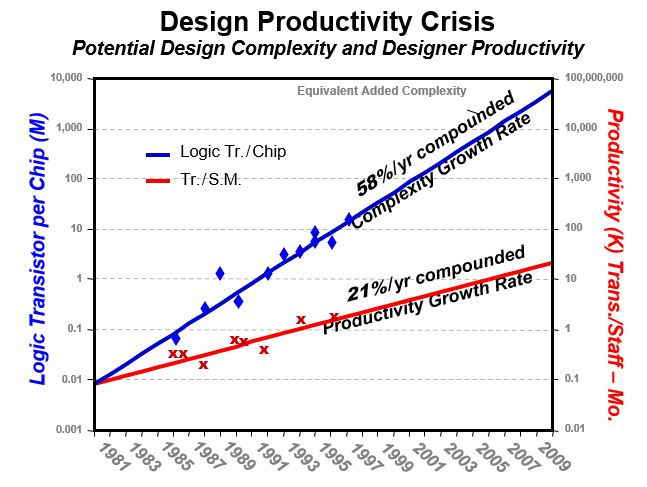

Moore's law is basically a prediction on the growth rate of logic complexity made by Gordon Moore. It says that the transistor count per chip increases exponentially with years (approximately two times every eighteen months).

It may be noted that, since the Y-axis is on a logarithmic scale hence the variation is displayed as a straight line. The reduction in transistor size is basically due to the invention of matured fabrication facility, advanced computer aided design tools and libraries, etc. This grately reduces design time and complexity. Due to the advancement in modern fabrication processb flow, more number of transistor can be fabricated inside same silicon area and thus helps the Moore's prediction to became true.